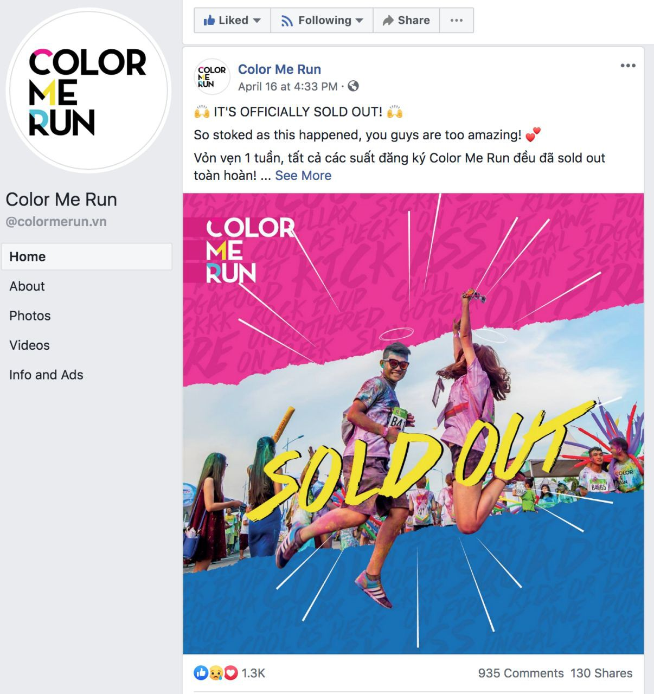
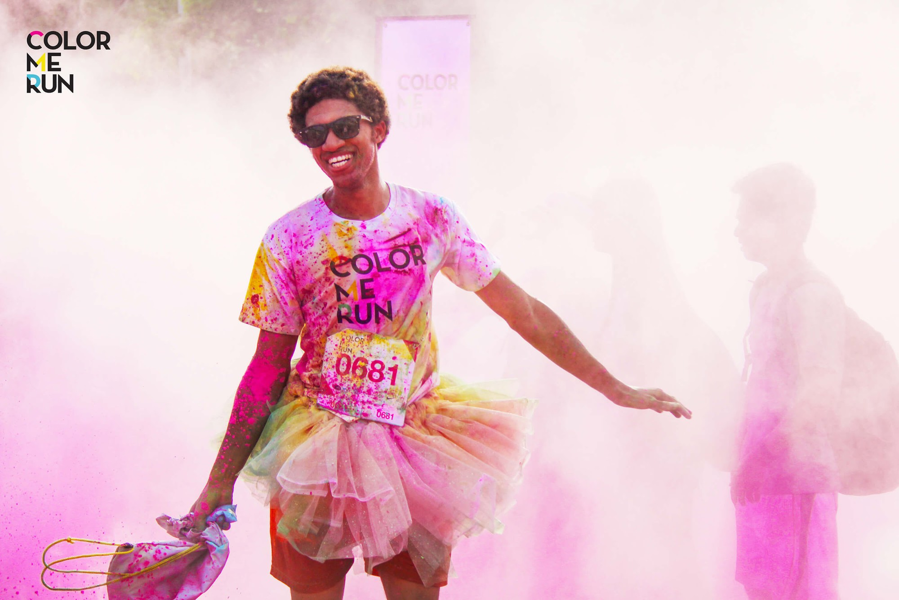
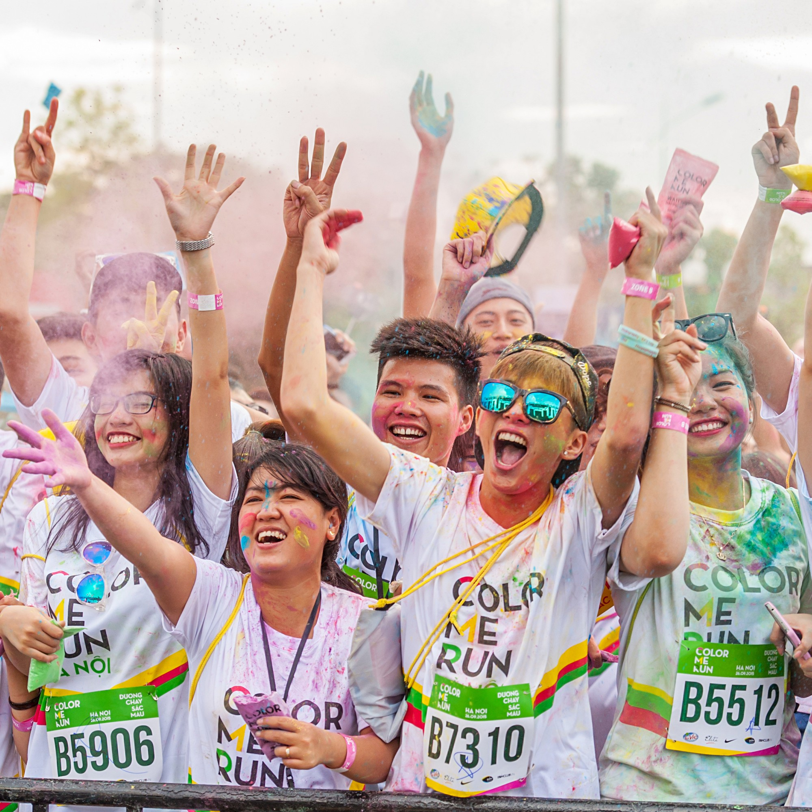

Gần 10,000 vé lễ hội sắc màu Color Me Run 2019 đã chính thức hết sạch chỉ trong vòng 1 tuần mở bán. Chưa bao giờ, giới trẻ TP.HCM lại mong chờ "đập tan" cơn khát lễ hội như lúc này đây.
Một lần tham dự Color Me Run, nghìn lần trầm trồ ngất ngây
Mỗi năm cứ đến mùa hè, giới trẻ Việt Nam lại hừng hực đón chờ Color Me Run - một trong những sự kiện âm nhạc (kết hợp với thể thao) đầy sắc màu và giàu trải nghiệm. Một khi đặt chân đến lễ hội, người tham dự sẽ có cơ hội được thoả sức ghi dấu những khoảnh khắc vui nhộn, khó quên cùng bạn bè và người thân theo cách rất riêng của mình. Giữa một biển màu rực rỡ, không một bộ quần áo nào có thể được "đảm bảo bản gốc" của mình sau khi trở về từ sự kiện.

Trải qua 5 năm tổ chức & ghi dấu những ấn tượng khó quên trong lòng người hâm mộ, năm nay lễ hội lần đầu tiên thiết lập kỷ lục "bom tấn" khi 10,000 chiếc vé nhanh chóng hết sạch chỉ trong vòng chưa đến 1 tuần. Website của chương trình nhanh chóng rơi vào tình trạng "Sold out" sau bao nhiêu phút "cầm cự" trước những cơn bão đăng ký của người tham dự. Trong cái khí trời oi bức hiện tại của Sài Gòn, người người khao khát một chiếc vé đường chạy sắc màu còn hơn cá khát nước.
Truy tìm lực hấp dẫn đằng sau những làn khói đầy sắc màu
Tình trạng khát vé Color Me Run đã phần nào minh chứng cho sức hút khó cưỡng của chương trình. Tuy nhiên, hiện tại thời tiết đã trở nên vô cùng oi bức, huống hồ chi là cho đến thời điểm diễn ra lễ hội sắc màu. Vậy đâu là nguyên nhân khiến cho bao người trẻ sẵn sàng tham dự một sự kiện ngoài trời như thế này trong những ngày hè "toát mồ hôi"?
1. Thông điệp khác biệt, tạo dấu ấn riêngSức lan toả của sự kiện cốt lõi đến từ quy mô tổ chức khác biệt & độc đáo. Là một trong những cái tên đi đầu trong việc kết hợp mô hình sự kiện chạy bộ với lễ hội âm nhạc, Color Me Run còn nhanh chóng ghi dấu tên tuổi của mình bằng việc mang đến những thông điệp tràn đầy năng lượng tuổi trẻ: "Không quan trọng bạn là ai, nhưng một khi đã bước chân vào lễ hội, thì ai cũng cần phải "cháy hết mình, vui hết nấc" và nhất là không ngần ngại".
2. Thời điểm hoàng kim tạo nên hiệu ứng lan toả
Một trong những yếu tố cũng không hề kém quan trọng góp phần tạo nên cú "hit" lớn năm nay của lễ hội nằm ở việc lựa chọn thời điểm vàng phù hợp. Color Me Run 2019 trở lại vào đúng ngay dịp nghỉ hè của rất nhiều bạn trẻ, gia đình tại Thành phố Hồ Chí Minh. Họ đã lựa chọn lễ hội sắc màu làm nơi để ghi dấu kỷ niệm mùa hè theo những cách rất riêng của mình. Nói một cách khác, mỗi một người tham dự cũng chính là một mảng màu rất riêng, góp phần tạo nên một ngày lễ hội náo nhiệt và giàu cảm xúc.
Người bình thường sẽ cần ít nhất 2 lít nước mỗi ngày để cơ thể điều tiết hài hoà. Tuy nhiên, khí trời oi bức như hiện tại thì 2 lít cũng chẳng đủ để đập tan cơn khát nước, huống hồ chi là cơn khát "fest" của bao tín đồ "ăn chơi nhảy múa". Có thể thấy rằng, sự góp mặt của Color Me Run trong thời điểm này đã phần nào đập tan cơn khát của bao bạn trẻ.
3. Khi đi nguyên vẹn 2 tay, ra về chỉ còn mỗi một cánh tay
Đó là bởi vì tay còn lại đang bận nắm chặt vào bàn tay kia của "tình yêu đích thực" tại lễ hội sắc màu. Color Me Run mỗi năm đều ghi nhận rất nhiều trường hợp "đi một mình, về có đôi" của không ít thành viên thuộc hội F.A.
Chưa kể, vô số mối quan hệ bạn bè mới đã được thiết lập sau mỗi kỳ lễ hội sắc màu. Theo ghi nhận sau mỗi sự kiện, danh sách kết bạn của rất nhiều người tăng lên nhanh chóng một cách đột biến.
Bước vào như những người lạ, ra về thì kề vai bá cổ như bằng hữu. Những hình ảnh thế này chỉ có thể xuất hiện ở những nơi mà người tham dự cùng nhau hoà chung một tần số cảm xúc, hoà theo những làn khói đầy sắc màu và âm nhạc sống động, chính tại Color Me Run!
Sẵn sàng cho những trải nghiệm bất tận cùng Color Me Run 2019
Bên cạnh những hashtag, check-in du lịch "quốc dân", #Colormerunvn hứa hẹn sẽ là trở thành một trong những hashtag xuất hiện "dày đặc" nhất trên mạng xã hội mùa hè này. Nếu các tín đồ yêu thích trải nghiệm vẫn chưa có kế hoạch gì cho mùa hè này, Color Me Run 2019 chắc chắn sẽ là một điểm hẹn không thể bỏ qua dành cho những ai yêu thích lưu giữ những khoảnh khắc đáng nhớ theo cách rất riêng của mình.